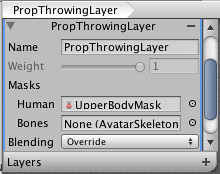

Unity Manual>User Guide>Creating Gameplay>Mecanim Animation System>Bringing Characters to Life>Mecanim Advanced topics>Animation Layers
Animation Layers
Unity uses Animation Layers for managing complex state machines for different body parts. An example of this is if you have a lower-body layer for walking-jumping, and an upper-body layer for throwing objects / shooting.
You can manage animation layers from the Layers Widget in the top-left corner of the Animator Controller.

You can add a new layer by pressing the on the widget. On each layer, you can specify the body mask (the part of the body on which the animation would be applied), and the Blending type. Override means information from other layers will be ignored, while Additive means that the animation will be added on top of previous layers.
The Mask property is there to specify the body mask used on this layer. For example if you want to use upper body throwing animations, while having your character walk or run, you would use an upper body mask, like this:

For more on Avatar Body Masks, you can read this section
Animation Layer syncing (Pro only)
Sometimes it is useful to be able to re-use the same state machine in different layers. For example if you want to simulate "wounded" behavior, and have "wounded" animations for walk / run / jump instead of the "healthy" ones. You can click the checkbox on one of your layers, and then select the layer you want to sync with. The state machine structure will then be the same, but the actual animation clips used by the states will be distinct.

(back to Mecanim introduction)
Page last updated: 2012-11-06